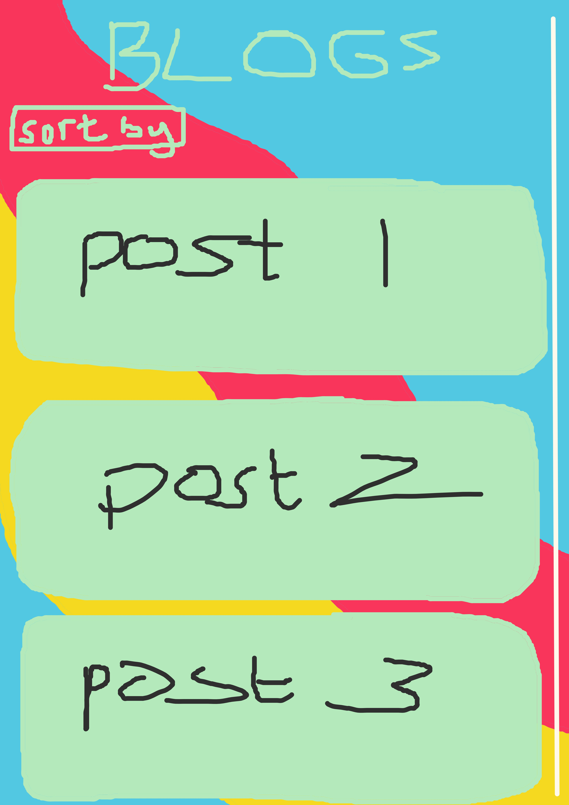
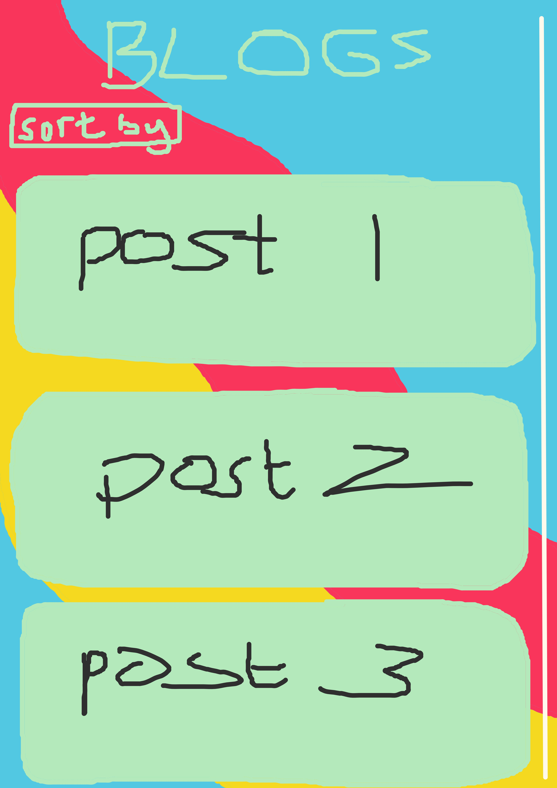
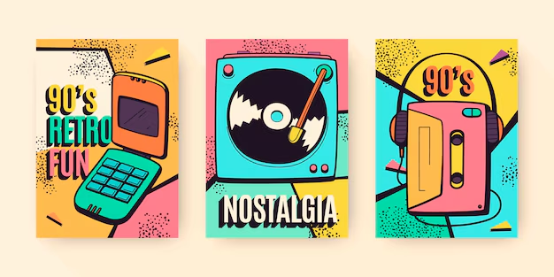

When reading Moulthrop (2003), it starts as listing the good things that hypertext can do for people navigating the internet. It tells a quick history linking back to the origin of the hypertext with Vannevar Bush and the Memex in the 1940's, artificial intelligence researchers in the 1960's created the first hypertextual narrative to experiment with interactive computing. Nelson then coined the term hypertext in the 1970's and had big ideas for it, which later on caused Engelbart to partner with him to create a hypertext system called FRESS. It didn't catch on until 1987, when Microsoft Press published Nelson's underground works. Later, in the 90's, the hype around hypertext had died down for the next big thing and Moulthrop (2003) states that
"such changes of fashion seem a regular hazard of the postmodern territory."
He says that people are waiting for a technological revolution, but that we do not know what we are actually asking for, and are thus constantly disappointed and move in circles.
After hypertext comes hyperreality. When this essay was published, virtual reality was merely living on the internet, but now in today's age, there are VR headsets that allows you to move more into a hyper*reality*. Moulthrop (2003) explains it best,
"Hyperreality, we are told, is a site of collapse or implosion where referential or “grounded” utterance becomes indistinguishable from the self-referential and the imaginary."
Later on, he states that we are at risk of falling into a hopelessly abandoned simulation. Other academics, that Moulthrop has used, have all said that postmodern modes of communication are capable and will destabilize the current social hierarchy. We have already seen that happen, the best example I can think of is in school where the more followers you have on your socials indicate how popular you are in the social hierarchy of school. Everyone directs people to follow them on their other social media platforms via the hypertext in their bio. This reconstruction of the social hierarchy is what Nelson referred to as populitism - the combination of "populism” and “elite. The popular elite will shift the attention to accommodate the demands of the moment, and this is where the politics comes to stir the pot.
We have even seen how it could happen this year already when the US government tried to ban TikTok, and the orange in charge 'played the hero' when he was all for banning the platform just a few years ago, and this all caused havoc on the platform for like 2 weeks (I'm not on TikTok a lot, so I don't know how long people milked it).
"Hypertext does increase the agonistic element in reading." (Moulthrop, 2003)
To me, this reads as people using the hypertext are more concerned with prior authority than if they were reading conventional writing. Mostly because it does not dispel the vibe of the original intent. It is easier to streamline the main ideas of a rabbithole, but it also gives way to an easier spread of misinformation.
It is said at least twice in the reading that hypertext does not replace books, but television as we still print lots and lots of books in today's time. However, that is not to say that books will remain as forests dwindle, paper costs rise, and maintenance for libraires will become too much. Though us book lovers need not fear as
"The chief technological culprit in Kernan’s “death of literature” is not the smart machine but the idiot box." (Moulthrop, 2003)
Hypertext does return two domains, namely literature and writing space. I interpret this return of domains as websites like fanfiction.com and AO3 where people have spaces on the internet to write their literature and share that literature with others for free. When taken to its extreme, hypertext becomes paradoxical like I have previously mentioned.
Reference: Moulthrop, S. (2003) ‘You Say You Want a Revolution? Hypertext and the Laws of Media (1991)’.
Wireframe ideas:

I really like the aesthetic of a retro funky vibe. Most of the wireframes look like this one, but I will include them in case anyone is interested.


Then, for mobile, I wanted to keep the squiggly lines and colour scheme:
 



Reference material: This isn't everything as it will progress over time

One of the colour schemes I thought to use because I like the colours. Link:
https://creativebooster.net/blogs/colors/retro-color-palettes

A pattern I found fun to use. Link:
https://www.shutterstock.com/image-vector/retrofuturism-poster-design-trend-retro-line-2271242913
More colour scheme options I like. Link:
https://img.freepik.com/free-vector/hand-drawn-nostalgic-90-s-covers_23-2149049463.jpg

MORE FUN SQUIGGLES. Link:
https://www.istockphoto.com/vector/1960s-hippie-style-wallpaper-design-trippy-retro-background-for-psychedelic-60s-70s-gm1395383184-450517629
I like the squiggles because they're fun and I feel like it represents my mind and its constant state of thinking several things at once.